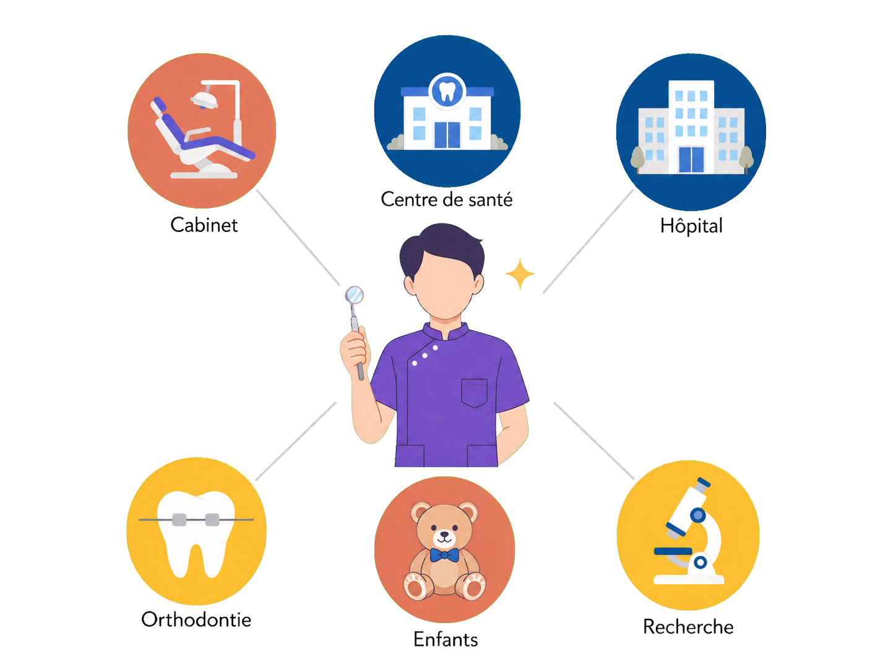
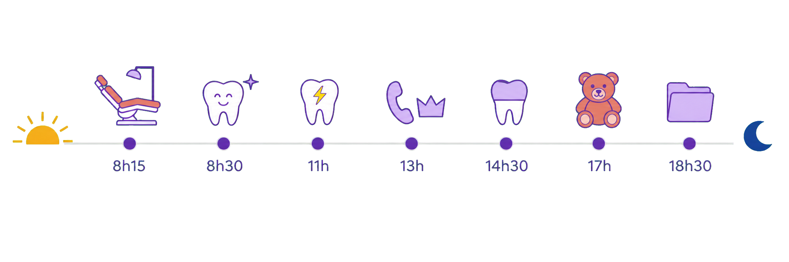
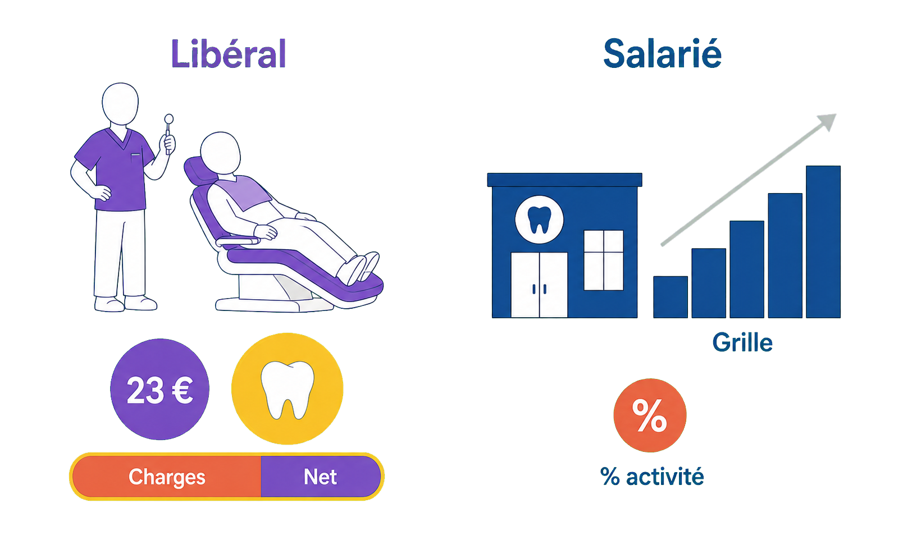
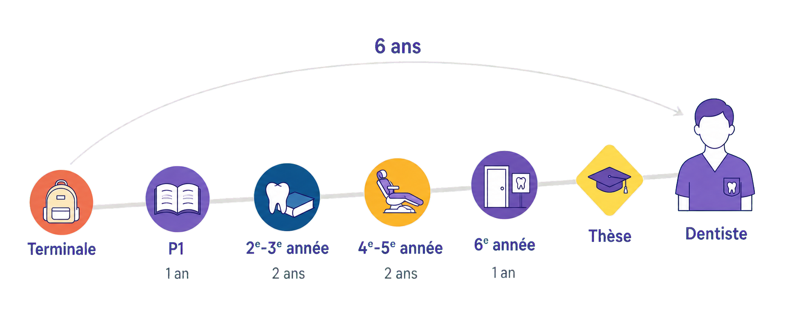
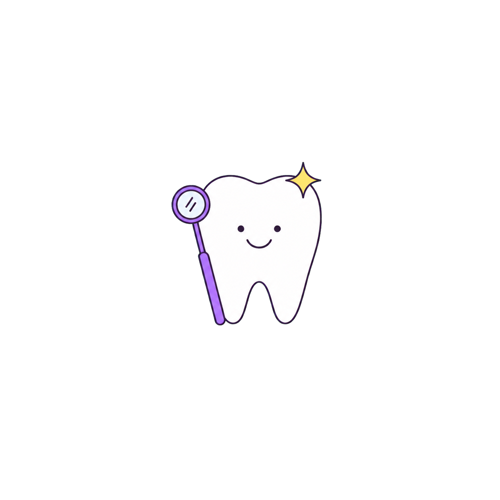

Le seul « chirurgien » accessible en 6 ans après le bac — et 8 dentistes sur 10 exercent en libéral, le plus souvent en cabinet de groupe.
Des gestes au dixième de millimètre, des patients de 3 à 103 ans — et près de deux tiers des dentistes ne travaillent jamais le samedi.

📁 fiche_metier_chirurgien_dentiste_univers.png à placer dans : /public/images/metiers/ Petite illustration SANS fond (PNG transparent) : un chirurgien-dentiste au centre entouré de six pastilles pictogrammes (cabinet, centre de santé, hôpital, orthodontie, enfants, recherche).
Un seul diplôme, des dizaines de façons de soigner les sourires.
Prompt ChatGPT-image :
Charming minimal flat 2-D vector illustration, light and airy, FLAT SOLID pastel colours only, thin clean outlines, isolated on a fully TRANSPARENT background (PNG with alpha) — no background shape, no frame, no card, no drop shadow, absolutely NO dark background, NO glow, NO neon, NO blur, NO soft halos around elements: crisp flat shapes on pure transparency, as in a clean SVG icon set. Landscape 4:3 composition. One friendly flat dentist silhouette in the centre, seen from the front, smooth blank face, violet #6B46C1 medical tunic, holding a tiny angled dental mirror in one hand, about 40% of image height. Around the dentist, six small round pastel discs arranged in a regular fan (three above, three below), each linked to the dentist by a fine light-grey line, each disc holding one simple flat pictogram, one short French sans-serif label just below each disc: « Cabinet » (warm terracotta disc, simple reclined dental chair), « Centre de santé » (deep blue #1F4E8C disc, small building with a tooth sign), « Hôpital » (deep blue disc, larger flat building), « Orthodontie » (honey amber disc, tooth with a thin straight wire across it), « Enfants » (warm terracotta disc, teddy bear), « Recherche » (honey amber disc, microscope). One tiny yellow #FCD34D four-point spark near the dentist's head, the only yellow accent. Airy, generous empty space. AVOID: any English text, gibberish or misspelled words, 3-D, photorealism, shadows, any background rectangle or colour, frames, borders, watermark, realistic faces, red cross emblem, scary drills or syringes, blood, decayed or sad teeth, wide-open realistic mouths, text inside the discs.
Repérer un cancer de la bouche avant qu'il ne se voie, faire disparaître une rage de dents, redonner un sourire, poser un implant au dixième de millimètre : le chirurgien-dentiste est le chirurgien du quotidien — l'un des rares soignants à réaliser des actes chirurgicaux presque chaque jour, dès la sortie d'études. Son territoire, c'est la sphère oro-faciale (les dents, mais aussi les gencives, les mâchoires et la langue) : un concentré de précision manuelle, de science et de relation humaine, avec une dimension esthétique qui change la vie des patients. Et c'est un métier qui se vit surtout en cabinet, près de chez toi : 8 praticiens sur 10 exercent en libéral. Sur cette fiche, on te montre le quotidien, l'argent — sans tabou — et le chemin, pour que tu puisses te projeter les yeux ouverts.
Ta journée si tu deviens chirurgien-dentiste
Une journée type
18h15 — Ouverture. Tu arrives avant le premier patient : avec ton assistante dentaire, vous préparez la salle de soins, sortez les instruments (stérilisés la veille) et passez en revue l'agenda du jour. Le fauteuil est prêt.
28h30 — Soins du matin. Un détartrage, deux caries à soigner, un contrôle. À chaque fois le même défi : des gestes au dixième de millimètre, dans une bouche, sur un patient éveillé qu'il faut mettre en confiance.
311h — L'urgence du jour. Une rage de dents(une pulpite : le nerf de la dent qui s'enflamme) glissée entre deux rendez-vous. Tu soulages d'abord la douleur — c'est souvent le moment où le patient te remercie avec le plus d'émotion.
413h — Pause… et prothésiste. Tu déjeunes, puis tu appelles le prothésiste dentaire(l'artisan qui fabrique couronnes et appareils) pour valider une teinte de céramique, et tu prépares deux devis.
514h30 — La partie « chirurgien ». Pose d'une couronne, extraction d'une dent de sagesse ou implant planifié sur une imagerie en trois dimensions : l'après-midi, place aux actes techniques longs.
617h — Le petit patient. Un enfant qui a peur. Ton arme secrète : la pédagogie — tout expliquer, tout montrer, dédramatiser. S'il repart en souriant, il n'aura plus jamais peur du dentiste.
718h30 — Chef d'entreprise. Dernier patient parti : stérilisation, dossiers, commandes de matériel, comptabilité. En libéral, tu diriges une petite entreprise — c'est la face cachée du métier.

📁 fiche_metier_chirurgien_dentiste_journee.png à placer dans : /public/images/metiers/ Bandeau fin SANS fond (PNG transparent) : ligne du temps soleil → lune, sept petits pictogrammes horodatés de la journée au cabinet.
De 8h15 à 18h30 : le fauteuil n'est que la partie visible.
Prompt ChatGPT-image :
Charming minimal flat 2-D vector illustration, light and airy, FLAT SOLID pastel colours only, thin clean outlines, isolated on a fully TRANSPARENT background (PNG with alpha) — no background shape, no frame, no card, no drop shadow, absolutely NO dark background, NO glow, NO neon, NO blur, NO soft halos around elements: crisp flat shapes on pure transparency, as in a clean SVG icon set. Very wide, slim banner. A single thin light-grey horizontal line across the middle, a small flat honey-amber rising sun at the far left end, a small deep blue #1F4E8C crescent moon at the far right end. On the line, seven small violet #6B46C1 dots; above or below each dot (alternating), one tiny flat pictogram with its time only, written in small violet French numerals: « 8h15 » reclined dental chair, « 8h30 » smiling flat tooth with a tiny sparkle, « 11h » tooth with a small yellow #FCD34D lightning bolt (the only yellow accent), « 13h » telephone handset beside a tiny crown shape, « 14h30 » single tooth-crown pictogram, « 17h » teddy bear, « 18h30 » closed folder. All pictograms the same small size, flat warm terracotta / deep blue / honey amber colours, lots of empty space. AVOID: any English text, gibberish, any word or label other than the seven times, 3-D, photorealism, shadows, any background colour, frames, borders, watermark, clock faces, realistic faces, scary drills or syringes, blood.
Où tu peux exercer
Trois façons de vivre le même métier
1Libéral — ton propre patron. C'est la voie de ≈ 8 dentistes sur 10 : cabinet individuel ou de groupe, ta patientèle, ton équipe, tes horaires. En face, tu gères une vraie petite entreprise (assistante dentaire, matériel, comptabilité). Tu fixes tes journées, tes jours de consultation et ton rythme — certains bouclent leur semaine en 4 jours, d'autres en 6, et près de deux tiers des dentistes ne travaillent jamais le samedi (enquête URPS Nouvelle-Aquitaine, 2023).
2Salarié — centre de santé, zéro gestion. Dans les centres de santé dentaires (mutualistes, associatifs ou municipaux) : un salaire — souvent indexé sur ton activité —, des congés payés et 35 à 39 h par semaine, sans aucun souci de gestion. En échange : moins de liberté sur les horaires, le rythme et le choix du matériel.
3Hôpital et université — les cas complexes. Une minorité choisie : soigner les patients que le cabinet ne peut pas prendre (handicap, maladies lourdes, chirurgie), enseigner aux étudiants, faire de la recherche. Temps plein = 10 demi-journées par semaine, plafonné à 48 h par la loi (DREES, données 2022).
Combien tu gagnes — et comment
Les circuits de l'argent
1En libéral : payé à l'acte — et deux familles de tarifs. C'est LE mécanisme à comprendre. Les soins conservateurs sont à tarifs fixés par l'Assurance Maladie, au centime près (consultation 23 €, détartrage 28,92 €, soin d'une carie de 26,97 € (une face) à 60,95 € (trois faces ou plus), dévitalisation d'une molaire 104 €). Les prothèses, implants et l'orthodontie, eux, sont à honoraires libres sur devis (couronne ≈ 350 à 800 €, implant ≈ 1 800 à 2 500 €) : c'est là que se fait le chiffre. Mais honoraires ≠ revenu : 50 à 60 % partent en charges. Au bout : ≈ 10 200 € net par mois en moyenne avant impôt (CARCDSF 2023), selon le rythme que tu te fixes.
2En salarié : un salaire — sans grille unique. En centre de santé, la paie est le plus souvent indexée sur l'activité (le taux se négocie de gré à gré) : ≈ 4 500 à 5 500 € brut par mois — soit ≈ 3 300 € net — en début de carrière, pour 35 à 39 h. À l'hôpital public, tu es payé sur la grille nationale des praticiens hospitaliers : de ≈ 3 900 € à ≈ 7 900 € net selon l'ancienneté — la grille exacte est dans le livret ci-dessous.
3Et pendant les études ? Dès la 4ᵉ année, tu soignes de vrais patients à l'hôpital et tu touches une rémunération d'étudiant hospitalier — modeste : ≈ 273 € brut par mois en 4ᵉ année, ≈ 410 € en 6ᵉ. Et si tu choisis l'internat (facultatif !), tu deviens salarié de l'hôpital : ≈ 1 600 € net par mois en 1ʳᵉ année, gardes en plus. Le détail année par année est dans le livret ci-dessous.
📖 L'argent pendant les études : la vérité année par année›
En odontologie (le nom universitaire des études dentaires), pas de salaire avant la 4ᵉ année — mais à partir de là, chaque année à l'hôpital est un peu payée, et l'internat, si tu le choisis, est un vrai salaire :
Année
Ce que tu touches
En face
P1 → 3ᵉ année
0 €
études classiques, pas encore de statut hospitalier
4ᵉ année (DFASO1)
273,14 € brut / mois (3 277,64 €/an)
premiers vrais patients à l'hôpital, sous supervision — mi-temps clinique
5ᵉ année (DFASO2)
336,17 € brut / mois (4 034,02 €/an)
clinique intense + stage d'initiation à la vie professionnelle
6ᵉ année (cycle court)
409,70 € brut / mois (4 916,46 €/an)
stage actif en cabinet de ville + thèse d'exercice
Internat 1ʳᵉ-2ᵉ année (facultatif)
≈ 1 600 – 1 750 € net / mois
salarié de l'hôpital : base ≈ 1 300 € net + indemnité de sujétion ; gardes en plus
Internat 3ᵉ-4ᵉ année
≈ 1 850 – 2 100 € net / mois
la base grimpe à ≈ 28 400 € brut par an — semaines denses (48 h maximum légal), gardes en plus
Rémunérations des étudiants hospitaliers en odontologie : arrêté du 29 juin 2023, montants en vigueur depuis le 1ᵉʳ juillet 2023. Les internes en odontologie sont payés sur la même grille que les internes en médecine (base 1ʳᵉ année : 19 406,35 € brut par an, arrêté du 8 juillet 2022 — montants toujours en vigueur en 2026) ; une garde de nuit en semaine ajoute 234,80 € brut, soit ≈ 190 € net, depuis la revalorisation pérennisée au 1ᵉʳ janvier 2024. ⏱️ Le temps en face : en 4ᵉ-5ᵉ année, la clinique occupe environ la moitié de la semaine en plus des cours — ce sont les deux années réputées les plus intenses du cursus.
📖 La grille du dentiste hospitalier — les 13 échelons›
En centre de santé, il n'existe pas de grille nationale : la paie se négocie de gré à gré (≈ 4 500 à 5 500 € brut, soit ≈ 3 300 € net, en début de carrière pour 35-39 h). À l'hôpital public, en revanche, le praticien hospitalier est payé sur la même grille nationale que les médecins :
Échelon
Durée
Brut annuel
≈ net / mois
Échelon 1
2 ans
55 607,79 €
≈ 3 900 €
Échelon 2
2 ans
58 082,41 €
≈ 4 050 €
Échelon 3
2 ans
62 148,07 €
≈ 4 350 €
Échelon 4
2 ans
66 567,09 €
≈ 4 650 €
Échelon 5
2 ans
68 688,21 €
≈ 4 800 €
Échelon 6
2 ans
71 162,83 €
≈ 5 000 €
Échelon 7
2 ans
76 465,74 €
≈ 5 350 €
Échelon 8
2 ans
79 647,54 €
≈ 5 600 €
Échelon 9
4 ans
90 549,14 €
≈ 6 350 €
Échelon 10
4 ans
94 557,64 €
≈ 6 600 €
Échelon 11
4 ans
99 810,26 €
≈ 7 000 €
Échelon 12
4 ans
105 062,89 €
≈ 7 350 €
Échelon 13
dernier
112 416,56 €
≈ 7 900 €
Grille nationale des émoluments des praticiens hospitaliers en vigueur depuis le 1ᵉʳ juillet 2023, inchangée à ce jour (sources SNPHARE et MACSF, vérifiée 2026) ; net mensuel estimé avant impôt. Il faut ≈ 32 ans pour atteindre le 13ᵉ échelon ; gardes et astreintes s'ajoutent. Repère DREES (données 2022) : le salaire net moyen des personnels médicaux hospitaliers — médecins et dentistes confondus, hors internes — ressort à ≈ 6 082 € par mois. Salaires en centre de santé : sources spécialisées 2025-2026 (28-32 % du chiffre d'affaires généré). ⏱️ Le temps en face : temps plein hospitalier = 10 demi-journées par semaine, plafonné à 48 h par la loi.
📖 Le libéral n'a pas de grille : la simulation›
Hypothèses affichées : 4 jours au fauteuil par semaine(le rythme le plus courant — le reste part en gestion), 45 semaines travaillées par an(congés non payés en libéral), et 57 % de charges — la fourchette réelle va de 50 à 60 % (assistante dentaire, prothésiste, fauteuil, radiologie, loyer, cotisations).
Rythme (sur 4 j / semaine)
Honoraires / mois
≈ net avant impôt
Jeune installé — ≈ 1 000 € d'actes / jour
≈ 15 000 €
≈ 6 450 €
Cabinet installé — ≈ 1 300 € / jour
≈ 19 500 €
≈ 8 400 € (proche de la médiane réelle)
Grosse activité — ≈ 1 800 € / jour
≈ 27 000 €
≈ 11 600 €
Une journée à ≈ 1 300 € d'honoraires, c'est par exemple une quinzaine de patients mêlant soins à tarif fixé (23 à 104 € l'acte) et un ou deux actes prothétiques (couronne ≈ 500 €) : ce sont les prothèses et implants qui font le chiffre, pas les soins courants. Réalité mesurée : revenu moyen 122 279 € net par an (≈ 10 200 €/mois) et médiane 97 672 € (≈ 8 100 €/mois) avant impôt — CARCDSF 2023, les données les plus récentes publiées. Chiffre d'affaires moyen d'un cabinet : 250 000 à 300 000 € par an. ⏱️ À savoir : à la durée passée au fauteuil s'ajoute toujours du temps de gestion — mais en libéral, chacun fixe son propre rythme — enquête régionale URPS/ORS Nouvelle-Aquitaine 2022, publiée en mars 2023.

📁 fiche_metier_chirurgien_dentiste_remuneration.png à placer dans : /public/images/metiers/ Petite illustration SANS fond (PNG transparent) : scène libéral (fauteuil, pièce 23 €, jeton couronne, barre charges/net) à gauche, scène salarié (bâtiment, escalier de grille, pastille % activité) à droite.
Payé à l'acte en libéral — tarifs fixés ou devis libres —, salaire ou grille en centre de santé et à l'hôpital.
Prompt ChatGPT-image :
Charming minimal flat 2-D vector illustration, light and airy, FLAT SOLID pastel colours only, thin clean outlines, isolated on a fully TRANSPARENT background (PNG with alpha) — no background shape, no frame, no card, no drop shadow, absolutely NO dark background, NO glow, NO neon, NO blur, NO soft halos around elements: crisp flat shapes on pure transparency, as in a clean SVG icon set. Two small scenes side by side, separated by generous empty space. LEFT scene, French label « Libéral » in violet #6B46C1 above it: a flat dentist silhouette standing beside a reclined patient silhouette on a simple flat dental chair; below them, one violet coin marked only « 23 € » in white, next to one slightly larger honey-amber disc holding a small white tooth-crown pictogram with no text inside; under the coins, one short horizontal rounded bar split slightly past the middle — warm terracotta portion labelled « Charges », violet portion labelled « Net » with a thin yellow #FCD34D ring around it (the only yellow accent). RIGHT scene, French label « Salarié » in deep blue #1F4E8C above it: a small flat deep-blue building with a tiny tooth sign, beside an ascending staircase of five deep-blue steps with a thin grey rising arrow, one label « Grille » under the staircase, plus one small warm terracotta disc holding a percent sign, labelled « % activité ». Exactly seven short French labels in the whole image, small clean sans-serif. AVOID: any English text, gibberish or misspelled words, any number other than 23 €, 3-D, photorealism, shadows, any background colour, frames, borders, watermark, banknote piles, dollar signs, pie charts, realistic faces, scary dental tools, blood.
Ces montants sont des moyennes, pas des promesses. Un cabinet dégage ≈ 10 200 € net par mois en moyenne, mais la médiane est à ≈ 8 100 € : une minorité de très gros cabinets tire la moyenne vers le haut. D'un département à l'autre, d'une activité à l'autre, les revenus varient du simple au double — le lieu où tu t'installes et le type de soins que tu pratiques comptent autant que le diplôme. Le revenu confortable se construit : un cabinet s'équipe, une patientèle se fidélise, un geste se perfectionne. Ce que le métier offre vraiment, c'est un revenu solide dès la sortie d'études — six ans après le bac, sans internat obligatoire —, une demande de soins partout en France, et un équilibre de vie rare parmi les soignants : pas de gardes de nuit, et une semaine bouclée en 4 à 4,5 jours pour près de la moitié des praticiens.
Le chemin depuis la Terminale

📁 fiche_metier_chirurgien_dentiste_parcours.png à placer dans : /public/images/metiers/ Bandeau SANS fond (PNG transparent) : chemin montant à six jalons avec durées, losange thèse, arc « 6 ans ».
Compte 6 ans après le bac — et 3 à 4 de plus seulement si tu choisis une spécialité.
Prompt ChatGPT-image :
Charming minimal flat 2-D vector illustration, light and airy, FLAT SOLID pastel colours only, thin clean outlines, isolated on a fully TRANSPARENT background (PNG with alpha) — no background shape, no frame, no card, no drop shadow, absolutely NO dark background, NO glow, NO neon, NO blur, NO soft halos around elements: crisp flat shapes on pure transparency, as in a clean SVG icon set. Wide banner. A thin light-grey path rises gently from bottom-left to upper-right with soft curves. Along it, six milestones and a final figure, spacing roughly proportional to duration: warm terracotta dot with a schoolbag pictogram, label « Terminale » ; violet #6B46C1 dot with an open book, label « P1 », tiny grey « 1 an » ; deep blue #1F4E8C dot with a small tooth beside a book, label « 2ᵉ-3ᵉ année », tiny grey « 2 ans » ; honey amber dot with a small reclined dental chair, label « 4ᵉ-5ᵉ année », tiny grey « 2 ans » ; violet dot with a small door and tooth sign, label « 6ᵉ année », tiny grey « 1 an » ; one yellow #FCD34D diamond with a tiny graduation cap, label « Thèse » (the only yellow accent). At the end of the path, upper right, one small flat dentist silhouette in a violet tunic, blank face, label « Dentiste ». Above the whole path, one thin light-grey arc from the first dot to the final figure with the single violet label « 6 ans ». Small clean French sans-serif labels, lots of empty space. AVOID: any English text, gibberish or misspelled words, 3-D, photorealism, shadows, any background colour, frames, borders, watermark, extra numbers, more than six milestones plus the final figure, hourglasses, calendars, sad or stressed characters, red cross emblem, scary dental tools.
6 étapes — 6 ans après le bac
1Terminale — Parcoursup. Tu formules tes vœux vers les études de santé. Un dossier régulier et des spécialités scientifiques sont tes meilleurs alliés — et une bonne habileté manuelle se cultive dès maintenant.
2La P1 (voies PASS ou LAS) — 1 an. L'année d'entrée, commune avec les futurs médecins et pharmaciens : un classement décide de ta filière, et les places en odontologie sont parmi les plus disputées. Ce n'est pas réservé aux génies : ceux qui décrochent leur place sont très souvent ceux qui arrivent avec une vraie méthode de travail dès les premières semaines.
32ᵉ et 3ᵉ années — 2 ans. Le premier cycle (conclu par le diplôme DFGSO) : sciences du vivant, anatomie de la sphère oro-faciale(dents, gencives, mâchoires, langue) — et déjà des travaux pratiques de dextérité sur dents artificielles, la marque de fabrique de ces études.
44ᵉ et 5ᵉ années — 2 ans. Le grand saut : tu soignes de vrais patients à l'hôpital, sous supervision, dès la 4ᵉ année. Deux années cliniques intenses, conclues par le CSCT(le certificat qui valide ton aptitude à exercer).
56ᵉ année — 1 an, et te voilà Docteur. Le cycle court, choisi par la grande majorité : un stage actif en cabinet de ville pour apprendre le métier en conditions réelles, la thèse d'exercice — et le diplôme d'État de Docteur en chirurgie dentaire. Tu peux exercer partout en France.
6L'internat — facultatif, 3 à 4 ans. Uniquement si tu vises une spécialité : orthodontie (3 ans), médecine bucco-dentaire (3 ans) ou chirurgie orale (4 ans). Un concours national — 140 postes offerts pour l'année 2026-2027 — et un salaire d'interne pendant tout ce temps.
À suivre : une « licence santé » unique a été annoncée le 17 avril 2026 pour remplacer le PASS et la LAS, visée pour la rentrée 2027 — le calendrier peut encore bouger, et le PASS et la LAS restent intégralement en place pour la rentrée 2026. Côté dentaire, une réflexion est aussi engagée sur l'évolution du 3ᵉ cycle (généraliser l'internat ou créer de nouvelles spécialités — il n'en existe que 3 en France, contre une dizaine au Canada). Quel que soit son nom, la première année restera classante — et la méthode de travail restera le nerf de la guerre.

📁 fiche_metier_chirurgien_dentiste_spot.png à placer dans : /public/images/metiers/ Mini-illustration SANS fond (PNG transparent) : une dent souriante et un petit miroir de dentiste violet. Aucun texte.
Prompt ChatGPT-image :
Charming minimal flat 2-D vector illustration, light and airy, FLAT SOLID pastel colours only, thin clean outlines, isolated on a fully TRANSPARENT background (PNG with alpha) — no background shape, no frame, no card, no drop shadow, absolutely NO dark background, NO glow, NO neon, NO blur, NO soft halos around elements: crisp flat shapes on pure transparency, as in a clean SVG icon set. Tiny spot illustration, a single motif: one friendly smiling flat white tooth with thin clean outlines and two tiny dot eyes, and leaning against its side a small violet #6B46C1 angled dental mirror with a thin handle; one tiny yellow #FCD34D four-point spark at the upper corner of the tooth, the only yellow accent. No text at all. AVOID: any text or letters, 3-D, photorealism, shadows, any background colour, frames, borders, watermark, decayed or sad tooth, drills, syringes, blood, realistic faces.
Fait pour toi si…
Tu aimes créer avec tes mains — dessin, maquettes, musique, couture : la dextérité est le cœur du métier, et elle se travaille. Tu aimes rassurer : beaucoup de patients arrivent avec la peur au ventre, et c'est toi qui la fais tomber. Tu veux du concret : ici, le résultat se voit dans l'heure — la douleur disparaît, le sourire revient. L'esthétique te parle autant que la science du vivant, et l'idée de monter ton propre cabinet, de choisir ton équipe et tes horaires, te motive plus qu'elle ne t'effraie.
Ce qu'on te dit moins
Le corps encaisse : des heures penché sur le fauteuil, la nuque et le dos mis à l'épreuve, le bruit des instruments toute la journée. Il faut aussi aimer gérer : en libéral, tu es chef d'entreprise (personnel, matériel, comptabilité), et la peur du dentiste te met parfois face à des patients très tendus. Enfin, les places en odontologie sont rares en P1. Mais en face : un métier demandé partout en France, un revenu solide dès 24-25 ans — et un équilibre de vie que peu de soignants connaissent.